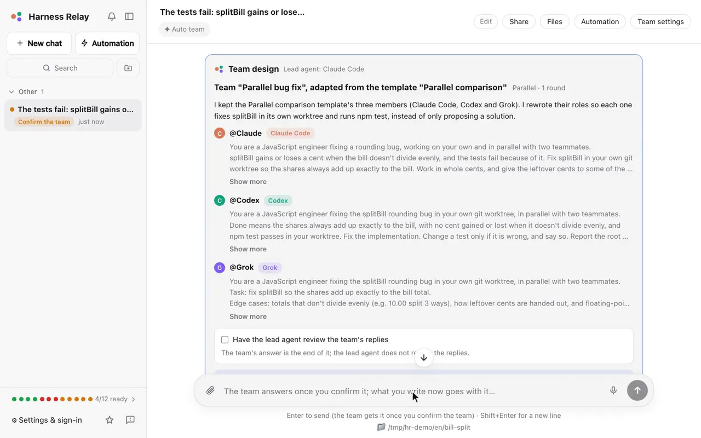

Teams and modes
A team is a few agents, each with a role, taking turns in a way you choose. The lead agent puts one together for each question from your templates; you can change it whenever you like.
How the lead agent picks a team
For each new question, the lead agent reads the question, the conversation so far, the current team and all your templates. Then it keeps the current team, uses a template as it is, adapts one (adding or dropping a member, rewriting roles, changing the mode), or designs a new team, and says why on the Team design card.
It staffs the team by what each of your agents can do: their models, and the tools each one has. A member that has to search the web goes on an agent that can, and hard reasoning gets a stronger model or effort. It writes each role the way that member's model takes instructions best; roles in your templates stay as you wrote them.

-
Not every message gets a new team. An answer to an agent's question, a message that
@mentionsmembers, Continue and an automation's message go to the team you have. - Members who stay on remember. A member who stays (same name, same coding agent) keeps what it learned; a new member reads the conversation from the start.
- The folder and the permission stay yours. The lead agent cannot change the working directory or the permission.
- Only agents that are ready. A member on an agent that is not signed in (or, for an open-source agent, has no model backend) is moved to the lead agent's own agent.
You choose which agent is the lead agent, and its model, in Settings: a small, fast model is usually enough. To skip confirming its teams, tick Use the lead agent's team without asking me; the card still shows what it chose and why. Confirming a team
Templates
Templates are where you design teams, and the lead agent picks from them. Five come built in:
| Template | Mode and team |
|---|---|
| Architect → Builder → Reviewer | Relay: Claude plans, Codex builds, Grok reviews, handing off with @mentions. |
| Three-way debate | Roundtable, two rounds: a proposer, a pragmatist and a skeptic. For design and technology choices. |
| Parallel comparison | Parallel: Claude, Codex and Grok each solve the same problem on their own, for easy comparison. |
| General-question panel | Roundtable: an analyst, a critic and a synthesizer. For any question, not just code. |
| Pair programming + QA | Roundtable: the navigator directs, the driver writes the code, QA writes tests and checks. |
Your templates are on the New chat page. Click one to open it, or New template to start from a blank team. A template has a name, a Description (the lead agent reads it when it picks a template, so say what the team is good for), its members, and how they take turns.
- Your own templates are saved with Save template, and deleted with their × button (Delete template).
- Built-in templates cannot be changed, but once you change something, Save as my template keeps your copy.
- Save as template on a team design card keeps a team the lead agent designed or adapted.
A template has no working directory or permission: those belong to each conversation. A member on an agent that cannot run on this computer is moved to one that can when you open the template, and the dialog says so.
Team members
Each member is a card in the team, with these fields:
- Agent name
-
The name you
@mention, unique in the team: letters, digits,_and-(Chinese characters work too). - Coding agent
- Which agent runs this member. Several members can use the same one, with different roles.
- Account
- Which of the agent's accounts it runs on, shown once the agent has more than one account.
- Position / role
- The most important field: what this member owns, what it should not do, and whom it hands off to. See Writing good roles.
- Model and Reasoning effort
- Pick one of the agent's models, or Custom… to type one. Default uses the default from Settings, or the agent's own.
- Tools
- What this member gets from your tool library. Tools
The arrows move a member up or down: the order is the speaking order, and in relay mode the first member leads. Add members with the buttons named after each coding agent; a team has up to eight members.
The three modes
The mode is how the members take turns. Each template has one, and the lead agent picks one for each team.
| Mode | How they take turns | Good for |
|---|---|---|
| Roundtable | One after another, in order; each sees what the earlier ones said. You set the Rounds (1 to 5); the run ends early when everyone in a round has nothing to add. | Discussions, reviews, refining an answer. |
| Parallel | All at the same time, each on its own. In later rounds they see the previous round's answers. | Comparing approaches, independent opinions. |
| Relay |
One at a time. A member hands off by @mentioning a teammate; if it mentions nobody, the
floor comes back to you. The Relay limit caps the hand-offs per message (1 to 30).
|
Pipelines: plan, then build, then review. |
In edit mode, roundtable and relay members change your working directory in turn, while in parallel mode each member works in a copy of its own, and you choose whose result to apply. Reviewing and applying changes
Change the team mid-chat
Click Team settings in the chat's header to change roles, models, effort, the mode, the permission or the working directory. Changes apply from the next turn. While the team is replying, they cannot be saved (except the lead review box).
Or let the lead agent do it: say what you want under Ask the lead agent at the top of Team settings, such as "add a tester on Codex", "switch to relay" or "have the Reviewer focus on security", and click Ask the lead agent. It changes the team shown below and notes what it changed and why; Undo puts it back, and Save uses it. It cannot change the permission: it says so instead.
A member you move to another coding agent starts a new session of that agent, which first reads the conversation so far.
Writing good roles
- Give each member a distinct job, and say what it should not do ("don't edit files yourself").
-
In relay mode, say whom to hand off to and when ("when done, list the files you changed and
@Reviewer"). - Give the final say to one member ("you speak last and give the user the final answer").
- To compare several solutions, use parallel mode with edit permission: each member gets its own copy, and you apply the one you like. For plan, build, review, use relay, so each one builds on the last one's changes.
- Save the teams that work well as templates, and give each template a description: the lead agent reads it when it picks one.